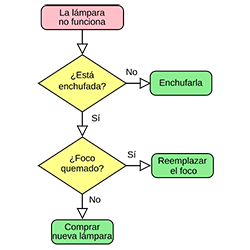
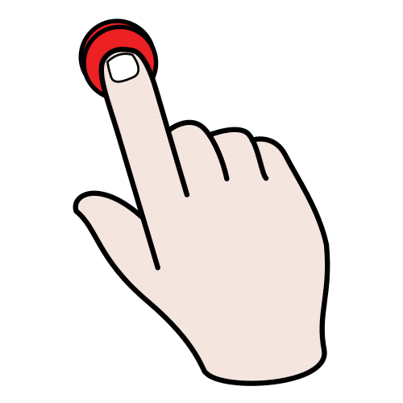
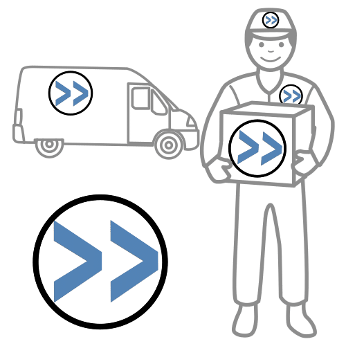
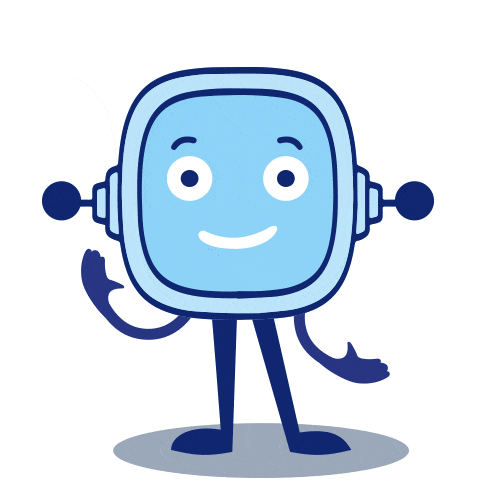
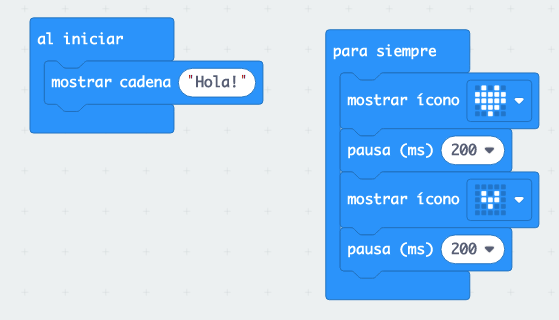
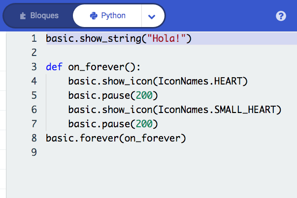
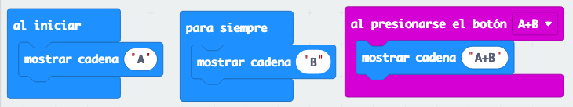
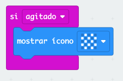
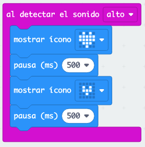

Diccionario
Algoritmo

Bugueado

Diagrama de flujo
Interactivo

Logo

Python


Hasta ahora hemos explorado nuestra placa, identificado sus componentes, hemos observado que cuenta con un “cerebro” y hemos visto cómo funciona.
Recuerda que también hemos conocido y practicado con el entorno de programación que nos servirá para comunicarnos con ella y darle instrucciones.
Ahora es el momento de comprobar por fin el estado de nuestro robot. Tendremos que poner en práctica todo lo aprendido. Así que… Debéis estar muy atentos y atentas ¡Seguro que lo harás muy bien! ¡Confía en ti!
1. Preparamos nuestro <i>¡Hola, Mundo!</i> interactivo
Antes de empezar a programar vamos a preparar en los dos siguientes ejercicios qué vamos a hacer.
Para ello en esta actividad, vamos a trabajar de forma individual.
1.1. Escribe tu <i>¡Hola, Mundo!</i> interactivo
En el cuaderno escribe en forma de guion en qué quieres que consista tu ¡Hola, Mundo! interactivo.
 Definición:
Definición:
Que permite la interacción entre usuarios y sistemas informáticos.
Ejemplo:
Nuestro robot es interactivo si reacciona ante estímulos externos como puede ser al pulsar un botón.
¿Necesitas ayuda para escribir tu ¡Hola, Mundo!?
Piensa cómo quieres que se comunique tu robot al “despertar”. Escríbelo en forma de guión.
Veamos un posible ejemplo que te sirva como estrategia a la hora de realizar tu ¡Hola, Mundo!:
- Al empezar: Decir Hola.
- De forma continua: Corazón latiendo.
- Corazón grande.
- Esperar 0,5s.
- Corazón pequeño.
- Esperar 0,5s.
- Reaccionar a estímulos externos (ya veremos cómo hacerlo)
1.2. Crea tus propios logos y animaciones
Puedes crear tus propios logos, iconos y animaciones para que aparezcan en la pantalla del robot.
En la siguiente hoja cuadriculada de 5x5 puedes diseñar tus propios logos:
Lumen dice ¿Necesitas ayuda para crear tus logos y animaciones?
Si necesitas ayuda para crear tus propios logos y animaciones, puedes pulsar acceder a la siguiente entrada de blog "Character Design with Microbit" donde nos explican como crear iconos y animaciones.

Abreviatura de logotipo. Es un signo gráfico que identifica a una empresa, un producto comercial, un proyecto o a cualquier entidad pública o privada.
Ejemplo:
Las marcas comerciales se identifican mediante un logotipo.
2. <i>¡Hola, Mundo!</i>

En esta actividad se plantean una serie de ejercicios escalonados para profundizar en el concepto del ¡Hola, Mundo!, cuando acabes uno, puedes ponerte con el siguiente. ¡Ánimo, intenta resolver cuantos más mejor!2.1. Replica el ejemplo del código de la imagen
Realiza el código de la imagen en el entorno de programación, cárgalo en la placa y comprueba su funcionamiento.

2.2. Explica el funcionamiento del programa
Explica cuál es el funcionamiento del programa anterior, ¿cuál es la función de cada uno de los dos bloques de control?
Clavis dice ¿Necesitas ayuda para explicar el funcionamiento?
Para ayudarte a entender el programa puedes explicar el funcionamiento a un compañero o compañera y después, que él o ella te lo explique a ti.
2.3. Personaliza tu <i>¡Hola, Mundo!</i>
Se trata de que personalices tu ¡Hola, Mundo! para que la placa robótica empiece a comunicarse como lo habías planificado. Puedes diseñar y añadir tus propios iconos.
2.4. Revisa y analiza el código en Python
Si le damos a la pestaña de Python podremos ver el código en este lenguaje de programación.
Revisa y analiza el código en Python ¿te atreves a modificarlo?
Definición:
Es un lenguaje de programación escrito.
Ejemplo:
Python es uno de los lenguajes de programación más usados para hacer sistemas con inteligencia artificial.
Lumen dice ¿Necesitas ayuda para ver el código de Python
Si necesitas ayuda para ver dónde está el código en Python, observa la siguiente imagen:

Definición:
Es un lenguaje de programación escrito.
Ejemplo:
Python es uno de los lenguajes de programación más usados para hacer sistemas con inteligencia artificial.
3. Interactividad con pulsadores
 En esta actividad vamos a ver cómo hacer que nuestro robot reaccione a estímulos externos. De esta forma podemos hacer nuestro ¡Hola, Mundo! interactivo y comprobar que sus circuitos siguen funcionando.
En esta actividad vamos a ver cómo hacer que nuestro robot reaccione a estímulos externos. De esta forma podemos hacer nuestro ¡Hola, Mundo! interactivo y comprobar que sus circuitos siguen funcionando.
Igual que en la actividad anterior se plantean una serie de ejercicios escalonados, cuando acabes uno, puedes ponerte con el siguiente. ¡Avanza a tu ritmo, pero no dejes nunca de querer superarte!
3.1. Replica el ejemplo del código de la imagen
Realiza el código de la imagen en el entorno de programación y cárgalo en la placa, comprueba su funcionamiento.

3.2. Añadimos más interactividad
Algunas de las cosas que puedes hacer para añadir más interactividad son:
- Usa también el botón B,
- ¿Sabes que también puedes usar el sensor del logo? (solo en la versión v.2.)
- ¿Puedes programar otro mensaje cuando se pulsen los botones A y B a la vez?
- Prueba a que funcionen todas estas opciones.
3.3. ¿Cómo vas a incorporar esto a tu programa?
Piensa cómo vas a incluir la interactividad mediante pulsadores a tu programa ¡Hola, Mundo! Escríbelo para luego tenerlo en cuenta.
Lumen dice ¿Necesitas ayuda para incorporar los pulsadores a tu programa?
Si necesitas ayuda para hacerlo, mira estos dos ejemplos, a ver si te gustan:

{kind=link}
3.4. ¡Esto se ha <i>bugueao</i>!
El siguiente programa se ha bugueado y no funciona correctamente, ¿puedes arreglarlo para que escriba A cuando se pulsa el botón A; B al pulsar el B y A+B cuando se pulsen los dos botones a la vez?

Definición:
Expresión coloquial para indicar que un programa o una parte de él tiene bugs (errores) que impiden su correcto funcionamiento.
Ejemplo:
El videojuego se ha bugueado y ha dejado de funcionar.
4. Interactividad agitando
En estos ejercicios vamos a incorporar interactividad cuando agitemos la placa.
4.1. Al agitar
Replica el ejemplo haciendo que se realice una actuación cuando la placa se agita.
Micro:bit V2

Micro:bit V1

4.2. Personalizamos el mensaje
Personaliza el mensaje de modo que tenga sentido en el programa de arranque de la placa que has planificado.
5. Interactividad con sonido (solo Micro:bit V2)
 En esta actividad vamos a trabajar la interactividad a través del sonido.
En esta actividad vamos a trabajar la interactividad a través del sonido.
Recuerda que solo dispones de micrófono si trabajas con la Micro:bit V2, si dispones de la Micro:bit V1 siempre puedes probarlo en el simulador.
5.1. Reaccionando al sonido
Replica el ejemplo haciendo que se escriba un mensaje cuando la placa detecta un sonido de nivel alto.

5.2. ¿Cómo lo incorporarías a tu programa?
Personaliza el mensaje de modo que tenga sentido en el programa de arranque de la placa que has planificado.
6. SOS, nuestro robot necesita ayuda
 En las actividades anteriores hemos visto cómo hacer el ¡Hola, Mundo!, cómo incluir interactividad con los pulsadores, captando sonido o agitando la placa.
En las actividades anteriores hemos visto cómo hacer el ¡Hola, Mundo!, cómo incluir interactividad con los pulsadores, captando sonido o agitando la placa.
Ahora se trata de que integres las diferentes cosas que quieres que haga tu robot al despertar en un solo programa.
¡Ha llegado el momento de realizar el reto que nos planteamos al inicio!
7. Realizamos el programa de chequeo de nuestro robot
Ha llegado el momento de que realices tu ¡Hola, Mundo! interactivo en el que le damos vida al robot y este chequea sus circuitos con la ayuda de un humano.
Lumen dice ¿Recuerdas el proceso de programación?
Recuerda que programar es un proceso cíclico, para ello debemos seguir la siguiente estrategia con el proceso que se presenta a continuación:
- Elegir un objetivo: analizar el problema y seleccionar el primer objetivo a realizar.
- Codificar el objetivo: escribimos el código para llevar a cabo el objetivo para lo cual realizamos un algoritmo.
- Probar: comprobamos los resultados, si todo funciona correctamente pasamos al siguiente objetivo, si no, corregimos los errores.
- Siguiente objetivo: añadimos nuevas funcionalidades al código realizado

 Definición:
Definición:
Un algoritmo es un conjunto de pasos para llegar a hacer algo.
Ejemplo:
Comprobar porque no enciende la luz lo podemos convertir en un algoritmo.
Definición:
Un algoritmo es un conjunto de pasos para llegar a hacer algo.
Ejemplo:
Comprobar porque no enciende la luz lo podemos convertir en un algoritmo.
7.1. Escribe el programa de chequeo de tu robot
Con lo aprendido en las actividades anteriores vuelve a escribir en qué quieres que consista el programa de inicio de tu robot.
Haz una lista con las instrucciones que quieres que realice el programa de chequeo de tu robot.
7.2. Realiza un diagrama de flujo de tu programa
Antes de empezar a programar sería conveniente que hagas un diagrama de flujo del programa que vas a realizar.
 Definición:
Definición:
Es la representación gráfica de un algoritmo o proceso.
Ejemplo:
El algoritmo para comprobar porque una luz no funciona se ha representado mediante un diagrama de flujo.
¿Necesitas ayuda para hacer el diagrama?
Si necesitas ayuda para realizar el diagrama, accede a la Guía didáctica de la competencia aprender a aprender.
7.3. Realiza el programa de chequeo de tu robot
Realiza el programa que quieres que lleve tu robot de inicio y que permita comprobar que sus circuitos funcionan correctamente.
Cargarlo en la placa robótica y comprueba que todo funciona correctamente.
Clavis dice ¿Cómo te ha ido?
Esta ha sido la parte más importante porque hemos puesto en práctica todo lo aprendido y hemos sido capaces de dar vida a nuestro robot. Por eso es interesante que antes de continuar nos paremos a pensar un poco sobre lo que hemos conseguido.
Puedes responder a estas preguntas o puedes hacerlas a un compañero o compañera a modo de entrevista. ¿Qué te parece?
- ¿Has podido escribir tu ¡Hola, Mundo!?
- ¿Has creado tus logos?
- ¿Has personalizado tu ¡Hola, Mundo!?
- ¿Has sido capaz de explicar el funcionamiento del programa?
- ¿Has entendido el código en Python?
- ¿Has conseguido que tu robot reaccione a estímulos?
- ¿Has arreglado el programa que se había bugueao?
- ¿Has conseguido que tu robot realice una actuación cuando la placa se agite? ¿Has personalizado el mensaje?
- ¿Has replicado el ejemplo haciendo que se escriba un mensaje cuando la placa detecta un sonido de nivel alto?
- ¿Has escrito el programa de chequeo de tu robot?
- ¿Te ha resultado difícil realizar el diagrama de flujo del programa?
Después de responder a estas preguntas, comenta con tus compañeros o compañeras qué puedes hacer la próxima vez para mejorar en los ejercicios que te han resultado más difíciles.